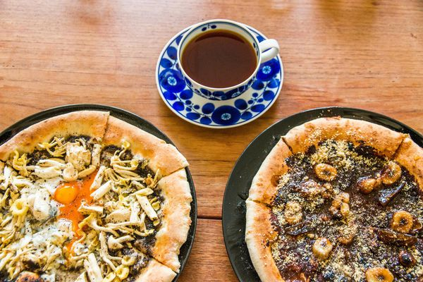
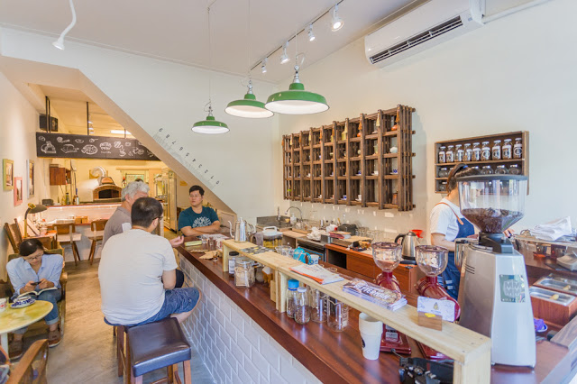

Betterman Pizza x Coffee


老闆娘的名字叫做阿不思, 名字出自"等一個人咖啡",她期待自己也能像電影裡的阿不思一樣為每位客人做出一杯屬於他的特調。 這是一家結合了咖啡以及披薩的咖啡店, 披薩主要以素食為主, 全程手工製作, 店內還有一個專屬的烤窯. 常常開店到下午3點就賣光了, 小編我很喜歡他們的黑魔鬼野菇, 裏頭有松露, 蘑菇, 荷包蛋, 味道部會太鹹, 餅皮也不會太乾, 一個人吃也剛剛好。 店內咖啡主要都是手沖出杯, 咖啡豆也都以極淺焙為主, 因此沖出來大多數都會偏濃厚果酸香居多, 若是不愛重酸值的咖啡豆還是能來嚐嚐他們的咖啡唷XD